CCI
PROJETO SIMULADOR FCI · CERVEJARIA CIDADE IMPERIAL · FRUTAL-MG
Relatório de Execução e Evidências — Semana 1
Fundação de dados, parâmetros e cenário · requisitos com entrega até 17/09 (+ RF-002 e RF-100, previstos para 18/09, antecipados)
Natureza das evidências: entrega funcional para validação das áreas responsáveis, conforme o cronograma — não representa homologação fiscal, validação de uso ou aceite definitivo. O simulador é analítico: não gera, não assina e não transmite a FCI oficial e não altera cadastros do Protheus (RN-12 · D-01 · E-14).
1 · Sumário do cronograma executado
A Semana 1 concentra a fundação de dados, parâmetros e cenário — 14 requisitos funcionais da ERS v1.0, materializando os requisitos consolidados RC-001, RC-002, RC-009, RC-015 e RC-016 (gatilho). O quadro abaixo confronta as datas previstas no cronograma com a execução. Todos os itens foram entregues em 17/09/2026, incluindo a antecipação de RF-002 e RF-100 (previstos para 18/09).
| RF | Requisito | RC | Área validadora | Entrega prevista | Executado em | Situação |
|---|
| RF-001 | Criar cenário | RC-001 | Custos | 15/09 | 17/09 | ENTREGUE |
| RF-090 | Configuração da fonte de dados | RC-015 | TI | 15/09 | 17/09 | ENTREGUE |
| RF-091 | Mapeamento de dados | RC-015 | TI / Processos | 15/09 | 17/09 | ENTREGUE |
| RF-098 | Faixas legais e fatores de cascata | RC-015 | Fiscal | 15/09 | 17/09 | ENTREGUE |
| RF-007 | Isolamento do cenário | RC-001 · RC-002 | Controladoria | 16/09 | 17/09 | ENTREGUE |
| RF-092 | Teste de conexão | RC-015 | TI | 16/09 | 17/09 | ENTREGUE |
| RF-096 | Parâmetros do motor de apuração | RC-015 | Fiscal / TI | 16/09 | 17/09 | ENTREGUE |
| RF-097 | Relação de alíquotas de ICMS | RC-015 | Fiscal | 16/09 | 17/09 | ENTREGUE |
| RF-093 | Sincronização manual e programada | RC-015 | TI | 17/09 | 17/09 | ENTREGUE |
| RF-094 | Status da integração | RC-015 | TI | 17/09 | 17/09 | ENTREGUE |
| RF-095 | Falha de integração sem parada | RC-015 | TI | 17/09 | 17/09 | ENTREGUE |
| RF-099 | Gatilho de reemissão da FCI | RC-015 · RC-016 | Fiscal | 17/09 | 17/09 | ENTREGUE |
| RF-002 | Carregar estrutura de origem do ERP | RC-001 · RC-015 | TI / SGI-CGI | 18/09 | 17/09 | ANTECIPADO |
| RF-100 | Restrição de administração | RC-009 | TI / Controladoria | 18/09 | 17/09 | ANTECIPADO |
Marcos e gates da S1
| ID | Data | Marco / gate | Evidência apresentada neste relatório | Situação |
|---|
| M0 | 14/09 | Kickoff e baseline equalizada | Baseline de 115 itens adotada como referência única deste relatório e do repositório (README + docs/ESCOPO_S1.md) | CUMPRIDO |
| G1 | 18/09 | Gate TI / Processos | Integrações conectadas (5/5 · Fig. 7), mapeamento SB1/SG1/SD1/CFD registrado (Fig. 9) e parâmetros mestres persistidos (Fig. 12) — pronto para validação da área | P/ VALIDAÇÃO |
| M1 | 18/09 | Fundação de dados concluída | Cenário abre com estrutura integrada, sem digitação manual (Figs. 2, 3 e 4 · seção RF-002) | P/ VALIDAÇÃO |
2 · Como o usuário verifica (roteiro de acesso)
Ambiente: aplicação Node.js servida em http://<servidor>:3000 com PostgreSQL local na mesma instância (VPS AWS Ubuntu — instalação por scripts/install-vps.sh). Em desenvolvimento: npm run setup && npm start.
Usuários de verificação (senha inicial cci@2026, definida em SEED_SENHA; trocar no 1º acesso):
| E-mail | Área | Perfil / uso na verificação |
|---|
| ti@cci.local | TI | Administrador — edita integrações, parâmetros, usuários |
| custos@cci.local | Custos | Simulador — cria cenários; comprova o modo consulta (RF-100) |
| controladoria@cci.local | Controladoria | Validador — congela cenário (RN-10) |
| fiscal@cci.local · pricing@cci.local · compras@cci.local | — | Perfis de consulta/simulação por área |
Roteiro mínimo de verificação (10 min):
- Entrar como ti@cci.local → menu Integrações: conferir 5 fontes, testar conexão, sincronizar, abrir Mapeamento e Execuções (RF-090…095).
- Menu Parâmetros: editar gatilho (5 → 7 p.p.), salvar; incluir/excluir alíquota; alterar um MV_FCI (RF-096…099).
- Sair e entrar como custos@cci.local → ＋ Novo cenário: cenário nasce v1/Rascunho com estrutura carregada (RF-001/RF-002); abrir a simulação e a aba Estrutura.
- Voltar a Integrações ainda como Custos: tela em modo consulta com aviso de restrição (RF-100).
- Menu Alertas: quantidade reflete o gatilho ajustado no passo 2 (RF-099).
Reprodução técnica: npm test executa os 11 testes de aceite da seção 5 contra o banco configurado no .env.
3 · Evidências por requisito
Cada bloco traz o critério de aceite do cronograma, a evidência técnica (código, API, banco e teste automatizado) e a evidência funcional — o passo a passo que qualquer usuário reproduz na aplicação, com a figura correspondente do Anexo A.
RF-001Criar cenárioRC-001 · Cenários e Governança · previsto 15/09 · validadora: Custos
“Cenário recebe identificador único, versão 1, status Rascunho, autor e data.”
EVIDÊNCIA TÉCNICA
- POST /api/cenarios → server/services/cenario.service.js (sequência cenario_codigo_seq, versão 1, autor da sessão, evento de auditoria em cenario_eventos).
- Teste automatizado #8 RF-001/RF-002 — ok: valida código CEN-NNN, v1, rascunho, autor e data.
POST /api/cenarios → { "codigo":"CEN-020", "versao":1, "status":"rascunho",
"autor":"Ana Ribeiro", "criado_em":"2026-09-17T17:14:59Z", … }
EVIDÊNCIA FUNCIONAL (VERIFICÁVEL PELO USUÁRIO)
- Entrar como custos@cci.local → tela Cenários → botão ＋ Novo cenário.
- Informar nome/tipo/ciclo e confirmar (Fig. 3).
- Resultado: card do cenário com código único (ex.: CEN-001), v1, chip Rascunho, autor e “Atualizado em” (Fig. 2).
RF-090Configuração da fonte de dadosRC-015 · Dados e Integrações · previsto 15/09 · validadora: TI
“Host/endpoint, porta, base, usuário e credencial editáveis; credencial nunca em texto claro.”
EVIDÊNCIA TÉCNICA
- CRUD /api/fontes com conector abstrato (postgres · oracle thin · mssql · mysql · rest · arquivo) — server/routes/fontes.routes.js, server/connectors/*.
- Credencial cifrada AES-256-GCM (server/crypto.js); API devolve somente máscara. Teste #2 — ok.
Em repouso (fci.fontes_dados.credencial_enc):
v1.enxo0tXI/GhcQ2PJ.u4h5EtWeSuxyjnwFe3Pe+Q==…
Na API: { "possuiCredencial": true, "credencialMascarada": "••••••••" }
EVIDÊNCIA FUNCIONAL
- Como TI → Integrações: 5 fontes com host, porta, base, usuário e credencial (Fig. 7).
- Editar conexão… abre o formulário completo; campo credencial exibe apenas “•••••••• (armazenada cifrada)”.
- ＋ Nova fonte de dados permite cadastrar origem nova escolhendo o conector (SGBD) — sem alteração de código.
- Na Fig. 11, a fonte de teste mostra a credencial sempre mascarada, inclusive em estado de erro.
RF-091Mapeamento de dadosRC-015 · Dados e Integrações · previsto 15/09 · validadora: TI / Processos · dep. RF-090
“Cada variável do simulador aponta tabela e campo de origem (SB1.B1_COD, B1_DESC, B1_ORIGEM, SD1.D1_CLASFIS).”
EVIDÊNCIA TÉCNICA
- Catálogo de variáveis (server/services/catalogo.js) + tabela fci.mapeamentos (variável → tabela · campo) · PUT /api/fontes/:id/mapeamentos.
- Seed registra o mapeamento do ERP: produto.codigo→SB1.B1_COD, produto.descricao→B1_DESC, produto.origem→B1_ORIGEM, cst.cst→SD1.D1_CLASFIS, estrutura SG1 e FCI vigente CFD.
- Teste #6 (variável fora do catálogo → HTTP 422) — ok.
EVIDÊNCIA FUNCIONAL
- Como TI → Integrações → card “ERP Protheus (TOTVS)”: bloco “MAPEAMENTO · VARIÁVEL → TABELA · CAMPO” visível no próprio card (Fig. 7).
- Botão Mapeamento… abre o editor: cada variável do simulador com tabela/campo editáveis, incluir e excluir linhas (Fig. 9).
- Salvar e sincronizar aplica a carga conforme o mapeamento.
RF-098Faixas legais e fatores de cascataRC-015 · Dados e Integrações · previsto 15/09 · validadora: Fiscal
“Três faixas exibidas com limite, fator (0 / 0,5 / 1) e alíquota associada.”
EVIDÊNCIA TÉCNICA
- Parâmetro faixas persistido em fci.parametros; validação do servidor exige exatamente 3 faixas com fatores legais 0/0,5/1 (RN-05) — server/routes/parametros.routes.js.
- Fatores aplicados na cascata do motor (public/js/engine.js), visíveis por componente na coluna “CI NÓ ×fator” (Fig. 4).
EVIDÊNCIA FUNCIONAL
- Menu Parâmetros: os três cartões de faixa — CI% ≤ 40% (fator ×0 · ICMS 7%/12%), 40–70% (×0,5 · 4%), > 70% (×1 · 4%) — com limite, classe e alíquota (Fig. 12).
- Na simulação, cada componente exibe o fator aplicado (ex.: Lata 473ml “50% ×0,50” — Fig. 4).
RF-007Isolamento do cenárioRC-001 · RC-002 · previsto 16/09 · validadora: Controladoria · dep. RF-001
“Alteração em um cenário não altera outros cenários nem o cadastro oficial de origem.”
EVIDÊNCIA TÉCNICA
- Cada cenário guarda snapshot próprio em JSONB (fci.cenarios.dados); PUT /api/cenarios/:id/dados altera só a linha do cenário; conectores executam apenas SELECT (RNF-06).
- Teste #9 — ok: altera câmbio USD→9,99 no cenário A e comprova B inalterado; edição registrada em cenario_eventos.
- Teste #10 (RN-10) — ok: congelado → edição retorna HTTP 409; duplicação gera v+1.
EVIDÊNCIA FUNCIONAL
- Criar dois cenários; no primeiro, aba Parametrização, alterar a cotação USD e Salvar alterações.
- Abrir o segundo cenário: cotação original preservada; tela exibe “Alterações valem apenas neste cenário…” (Fig. 4, rodapé).
- Como Controladoria, 🔒 Congelar premissas: campos travados e banner com ação “Nova versão”.
RF-092Teste de conexãoRC-015 · previsto 16/09 · validadora: TI · dep. RF-090
“Teste acionável altera o status apresentado e registra o momento da verificação.”
EVIDÊNCIA TÉCNICA
- POST /api/fontes/:id/testar → conector real abre conexão e grava status, testado_em, teste_msg. Teste #4 — ok.
{ "ok":true, "mensagem":"Conexão estabelecida · PostgreSQL 16.13 (Ubuntu…)",
"status":"conectado", "testadoEm":"2026-09-17T17:14:46Z" }
EVIDÊNCIA FUNCIONAL
- Como TI → Integrações → Testar conexão em qualquer fonte.
- Resultado: notificação com a versão do SGBD (Fig. 8) e, no rodapé do card, “Teste: data/hora” registrado + chip de status atualizado.
RF-096Parâmetros do motor de apuraçãoRC-015 · previsto 16/09 · validadora: Fiscal / TI · dep. RF-090
“Parâmetros MV_FCI, CFOP de saída interestadual/interna/transferência e NF de complemento editáveis e persistidos.”
EVIDÊNCIA TÉCNICA
- Parâmetro motor com MV_FCICL, MV_FCIVE, MV_FCIVI, MV_FCITR, MV_FCICOMP e MV_FCINTHD espelhados do Protheus (Frutal — Grupo 30), persistidos via PUT /api/parametros/motor com histórico em parametros_hist. Teste #11 — ok.
EVIDÊNCIA FUNCIONAL
- Como TI → Parâmetros → bloco “Parâmetros do motor · MV_FCI”: listas de CFOP e demais valores editáveis (Fig. 12).
- Alterar um valor → Salvar parâmetros MV_FCI → reabrir a tela: valor persistido e registro no “Histórico de alterações”.
RF-097Relação de alíquotas de ICMSRC-015 · previsto 16/09 · validadora: Fiscal · dep. RF-096
“Inclusão, alteração e exclusão de alíquotas da relação aceita pelo motor.”
EVIDÊNCIA TÉCNICA
- Parâmetro aliquotas (MV_FCIALIQ = 4, 6, 7, 11, 12, 18, 23, 25) com validação 0–100%. Teste #11 — ok; histórico registra 3 alterações no período de verificação.
EVIDÊNCIA FUNCIONAL
- Parâmetros → “MV_FCIALIQ”: chips de alíquota com edição direta, “×” para excluir e “＋” para incluir (Fig. 12).
- Salvar alíquotas persiste a relação; recarregar a tela comprova.
RF-093Sincronização manual e programadaRC-015 · previsto 17/09 · validadora: TI · dep. RF-092
“Sincronização manual acionável e frequência programada visível por integração.”
EVIDÊNCIA TÉCNICA
- POST /api/fontes/:id/sincronizar + agendador node-cron por fonte (manual · 15min · horária · diária com horário) — server/services/sync.service.js. Execuções auditadas em sync_execucoes. Teste #5 — ok.
fci.fontes_dados → protheus: conectado · última sync 17/09/2026 17:14 · diária 06:00
precos: horária · portal_custos/cambio/compras: diária
EVIDÊNCIA FUNCIONAL
- Como TI → Integrações → Sincronizar agora: chip muda para “Sincronizando…” e conclui com notificação de registros carregados.
- Rodapé de cada card exibe a frequência programada (“Diária · 06:00”, “Horária”) — Fig. 7.
- Botão Execuções abre o histórico de cargas com disparo manual/agendada, usuário e registros (Fig. 10).
RF-094Status da integraçãoRC-015 · previsto 17/09 · validadora: TI · dep. RF-092
“Estados conectado, sincronizando e erro distinguíveis, com data e hora da última sincronização.”
EVIDÊNCIA TÉCNICA
- Campo status (nao_configurado · conectado · sincronizando · erro) atualizado em cada teste/sincronização, com last_sync_at. Testes #4/#5/#7 — ok.
EVIDÊNCIA FUNCIONAL
- Integrações: chips verdes “Conectado” (Fig. 7), âmbar pulsante “Sincronizando…” durante a carga e vermelho “Erro” (Fig. 11).
- Cada card mostra “Última sync: data/hora” no rodapé.
RF-095Falha de integração sem paradaRC-015 · previsto 17/09 · validadora: TI · dep. RF-094
“Integração em erro é destacada e o cenário permanece operável sobre os dados já carregados.”
EVIDÊNCIA TÉCNICA
- A sincronização busca todos os dados antes de gravar e aplica snapshot em transação única: falha → ROLLBACK → última carga válida preservada (RNF-07) — sync.service.js.
- Teste #7 — ok: fonte com host inacessível → HTTP 502, status “erro”, staging das demais fontes íntegro e criação de cenário funcionando em seguida.
EVIDÊNCIA FUNCIONAL
- Fig. 11: fonte “Origem de teste — indisponível” com chip Erro e a falha destacada (“connect ECONNREFUSED…”), com a mensagem “A última carga válida permanece no staging e os cenários seguem operáveis”.
- Nas demais fontes o badge “📦 N registro(s) no staging” comprova os dados disponíveis; criar um cenário nesse estado funciona normalmente.
RF-099Gatilho de reemissão da FCIRC-015 · RC-016 · previsto 17/09 · validadora: Fiscal · dep. RF-096
“Gatilho parametrizável em pontos percentuais (padrão 5 p.p.); alteração reflete nos alertas.”
EVIDÊNCIA TÉCNICA
- Parâmetro gatilho_reemissao (padrão 5 p.p., validação 0–100) com histórico — 6 alterações registradas na verificação. Teste #11 — ok (inclui rejeição de valor inválido, HTTP 422).
- Alertas de reemissão calculados com o gatilho vigente (RN-08) — engine.js · alertasCenario().
EVIDÊNCIA FUNCIONAL
- Parâmetros → “Gatilho de reemissão da FCI”: campo em p.p. com Salvar (Fig. 12).
- Alertas: cada alerta de reemissão cita a variação vs FCI vigente e o gatilho aplicado (Fig. 13); alterar o gatilho e voltar muda a quantidade de alertas e o contador do sino.
RF-002Carregar estrutura de origem do ERPRC-001 · RC-015 · previsto 18/09 (antecipado) · validadora: TI / SGI-CGI · dep. RF-091
“Ao abrir o cenário, lista técnica e cadastro de insumos refletem a origem integrada, sem digitação manual.”
EVIDÊNCIA TÉCNICA
- estrutura.service.js · montarDadosDeOrigem(): staging → 7 produtos (2 PI + 5 PA), 22 insumos, estrutura SG1 em cascata, CST da SD1, custos, saídas por UF, câmbio e FCI vigente (CFD). Regra de origem E-04 aplicada (catalogo.js) como padrão provisório até o gate G2.
- Staging carregado: produto 29 · estrutura 34 · cst 22 · custo 22 · saida_uf 15 · cambio 4 · fornecedor 11 registros. Teste #8 — ok (inclui origem 1→importado 100% e origem 3→CI 50%).
CEN-020 · origem_dados: "ERP Protheus (TOTVS) · Portal de Custos · Sistema de
Preços (Pricing) · Câmbio · Financeiro · Compras / Contratos"
produtos: 7 · insumos: 22 · fornecedores: 11 · câmbio USD/EUR/GBP/CHF
estrutura PA-9002: PI-7001×0,473 · MP-3002×1 · MP-3003×1 · MP-4001×1 · MP-5001×0,006
EVIDÊNCIA FUNCIONAL
- Criar um cenário (Fig. 3) — nenhuma digitação de produto/insumo é solicitada.
- Abrir a simulação → aba Estrutura: cascata MP → PI → PA completa, com origem/classificação, fornecedor, custo FCI e o selo “⬇ Origem: ERP Protheus (TOTVS) · Portal de Custos · …” (Fig. 4).
- Aba Parametrização: câmbio e volumes/preços por UF carregados da integração (Fig. 6).
- Botão ⬇ Recarregar estrutura do ERP refaz a carga do staging a qualquer momento.
RF-100Restrição de administraçãoRC-009 · previsto 18/09 (antecipado) · validadora: TI / Controladoria · dep. RF-090
“Perfis não administradores acessam integrações e parâmetros em modo consulta, com indicação da restrição.”
EVIDÊNCIA TÉCNICA
- Matriz de permissões por área (server/permissions.js) + middleware exigirAcao; escrita fora do perfil TI → HTTP 403 com a justificativa. Teste #3 — ok.
POST /api/fontes/1/testar (perfil Custos) → HTTP 403
{ "erro":"Ação restrita. Seu perfil (Simulador · Custos) tem acesso de consulta;
a edição de integrações e fontes de dados é do perfil Administrador (TI)." }
EVIDÊNCIA FUNCIONAL
- Entrar como custos@cci.local → Integrações: banner “🔒 Edição de conexões restrita ao perfil Administrador (TI). Visualização liberada para consulta”, botões desabilitados e apenas “Ver mapeamento” (Fig. 14).
- Parâmetros: mesmo comportamento (campos desabilitados, sem botões de salvar).
- Menu Usuários visível apenas para o Administrador.
4 · Verificação automatizada — testes de aceite
Suite test/smoke.test.js executada com npm test (Node.js 22 · PostgreSQL 16.13) contra a API real e o banco — resultado integral em 17/09/2026:
ok 1 - login inválido é recusado
ok 2 - RF-090/RNF-05 · fontes listadas sem credencial em texto claro
ok 3 - RF-100 · perfil não administrador tem apenas consulta em integrações/parâmetros
ok 4 - RF-092 · teste de conexão altera status e registra o momento
ok 5 - RF-093/094 · sincronização manual carrega staging e registra execução
ok 6 - RF-091 · mapeamento rejeita variável fora do catálogo
ok 7 - RF-095 · falha de integração não derruba a operação nem apaga a última carga
ok 8 - RF-001/RF-002 · cenário nasce com id único, v1, rascunho, autor e estrutura integrada
ok 9 - RF-007 · isolamento: editar um cenário não altera outro
ok 10 - RN-10 · cenário congelado bloqueia edição e exige nova versão
ok 11 - RF-096/097/099 · parâmetros editáveis, persistidos e com histórico
# tests 11 · pass 11 · fail 0
5 · Regras de negócio e requisitos não funcionais atendidos na S1
| ID | Exigência | Evidência |
|---|
| RNF-03 | Interface e mensagens em português do Brasil, terminologia fiscal/industrial | Todas as telas, mensagens de erro da API e notificações (Figs. 1–14) |
| RNF-05 | Credenciais nunca em texto claro; edição restrita ao administrador | AES-256-GCM em repouso + máscara na API (seção RF-090) · RBAC (seção RF-100) · teste #2 |
| RNF-06 | Nenhuma operação altera os sistemas de origem | Conectores executam somente SELECT/GET; cenários gravam apenas no snapshot próprio (teste #9) |
| RNF-07 | Falha de integração não impede operação sobre dados carregados | Seção RF-095 · Fig. 11 · teste #7 |
| RNF-04 | Rastreabilidade (base S1) | cenario_eventos (criação/edição/duplicação/status), parametros_hist, sync_execucoes (Fig. 10) |
| RN-12 | Simulador não transmite à SEFAZ nem substitui a FCI oficial | Avisos permanentes no login (Fig. 1), no dashboard (Fig. 2) e nos alertas (Fig. 13) |
| E-04 | Regra de origem × conteúdo importado (padrão provisório até G2 · 25/09) | 0→0% · 1 e 2→100% · 3→50% · 4–7→0% · 8→100% em catalogo.js; comprovada no teste #8 e na Fig. 4 |
| E-06 | Quatro moedas parametrizáveis | USD · EUR · GBP · CHF no parâmetro moedas e no câmbio do cenário (Figs. 6 e 12) |
| E-07 | FOB, frete e seguro manuais no cenário | Campos próprios no modelo do insumo; carga aceita valores segregados apenas se a origem fornecer (variáveis opcionais custo.fob…) |
Prévias entregues além do escopo S1 (sem compromisso de aceite nesta semana)
- Motor de cálculo do CI% portado do protótipo — cascata MP→PI→PA, fatores de faixa e denominador pela média ponderada das saídas (RN-01/02/03/05) alimentando as abas Estrutura e Cálculo (Figs. 4 e 5) — antecipação técnica das semanas S2/S3.
- Duplicar como nova versão (RF-003 · S2) e congelamento com nova versão (RN-10 · S5) já operacionais.
- Prévia de alertas (faixa, reemissão, risco > 40%) usando o gatilho da S1 (Fig. 13) — entrega plena na S6.
- Aviso de CST divergente (E-05/RF-033 · S2) na aba Validação.
6 · Validação pelas áreas (gate G1 · 18/09)
Campos para registro da validação funcional prevista no cronograma (as datas são de entrega funcional; não representam homologação fiscal).
| Área | Responsável | Data | Observações |
|---|
| TI / Processos (gate G1) | | | |
| Custos | | | |
| Fiscal | | | |
| Controladoria | | | |
Anexo A · Evidências funcionais — telas da aplicação (17/09/2026)
Capturas reais da aplicação em execução (resolução 1440×940, perfil indicado em cada figura). Reproduzíveis pelo roteiro da seção 2.
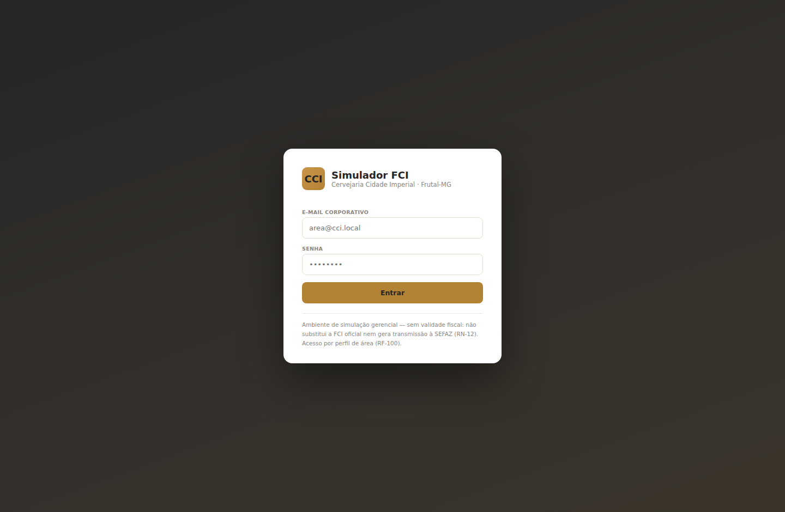
Figura 1 — Acesso com autenticação por perfil de área e aviso permanente de uso gerencial sem validade fiscal (RN-12 · RNF-03). Referências: RF-100.
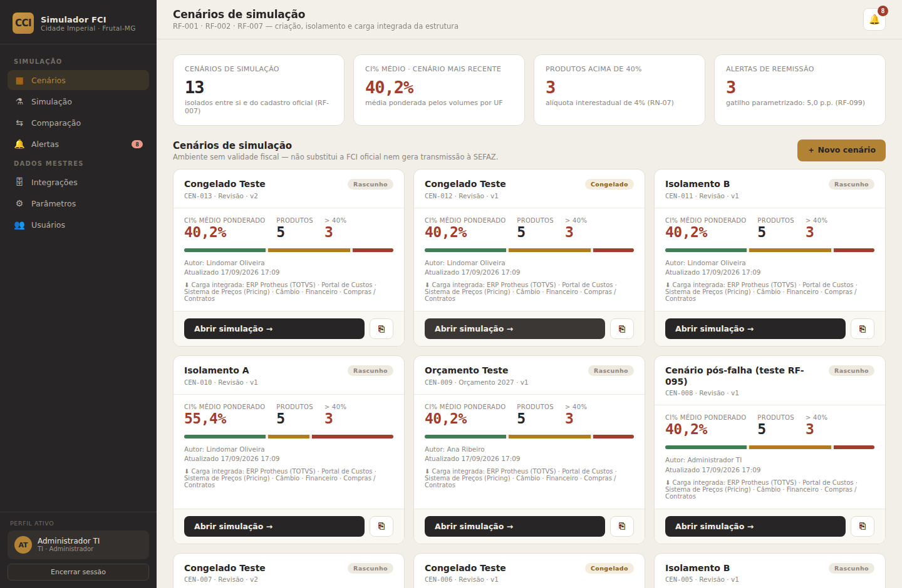
Figura 2 — Painel de cenários: KPIs, cenário CEN-001 v1 Rascunho com autor/data, distribuição por faixa e selo “Carga integrada” com as fontes de origem. Referências: RF-001 · RF-002 · RF-007 · RF-099 (contador de alertas com o gatilho vigente).
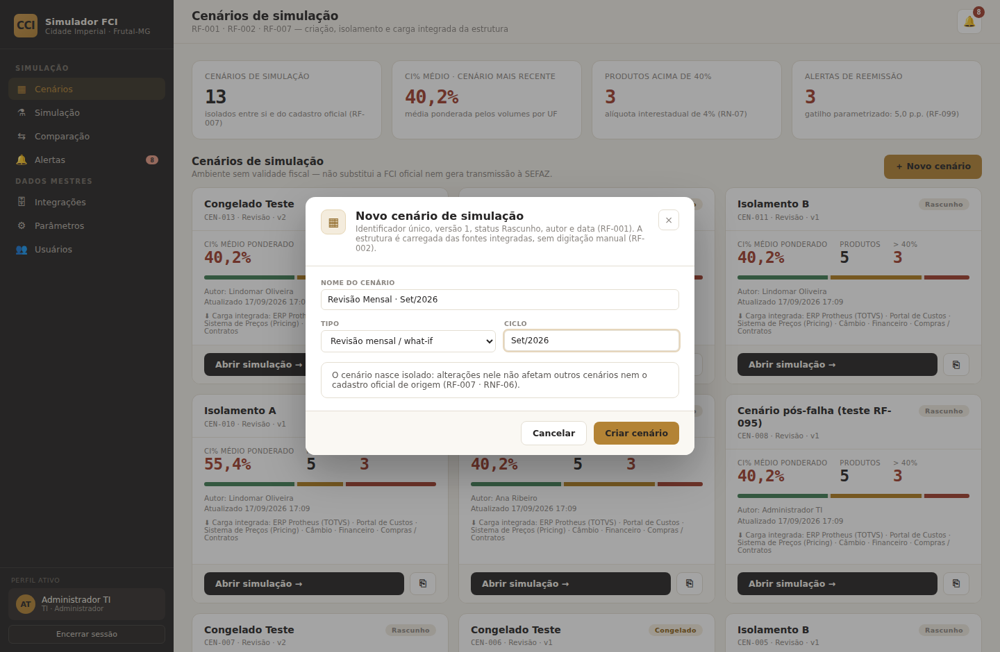
Figura 3 — Modal “Novo cenário”: identificador único, versão 1 e status Rascunho automáticos; estrutura carregada das fontes integradas, sem digitação manual. Referências: RF-001 · RF-002 · RF-007.
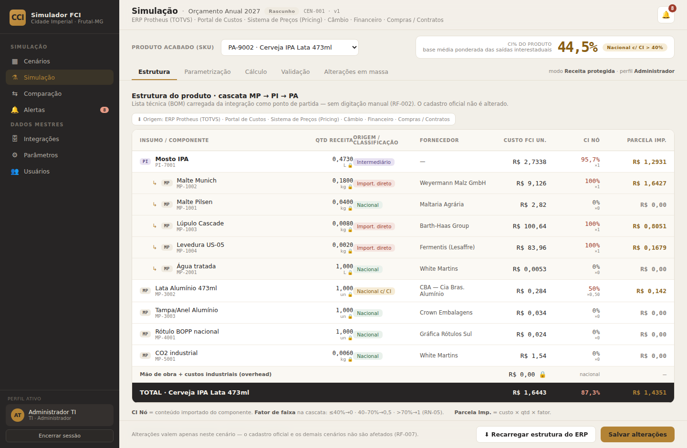
Figura 4 — Simulação · aba Estrutura: cascata MP → PI → PA da Cerveja IPA 473ml carregada do ERP (selo de origem), com classificação por origem (E-04), fornecedor, custo FCI unitário, CI do nó × fator de faixa e parcela importada; CI% do produto na base “média ponderada das saídas interestaduais”. Referências: RF-002 · RF-098 · prévia S2/S3.
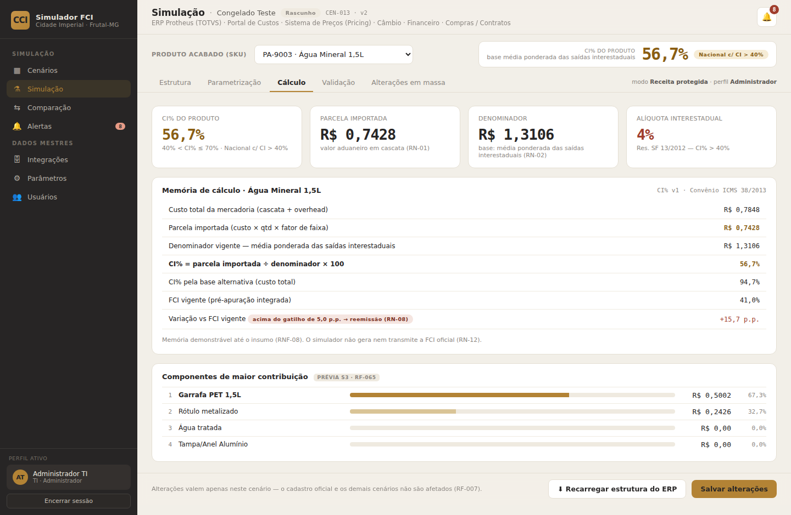
Figura 5 — Simulação · aba Cálculo: memória de cálculo demonstrável (custo total, parcela importada, denominador, CI%, base alternativa, FCI vigente e variação vs gatilho) com a versão da fórmula. Referências: RNF-08 · RF-099 · prévia S3 (RN-01/02/03).
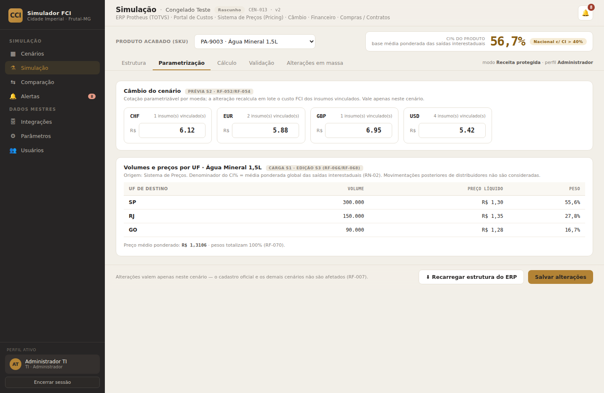
Figura 6 — Simulação · aba Parametrização: câmbio do cenário por moeda (USD/EUR/GBP/CHF · E-06) e volumes/preços por UF carregados do Sistema de Preços com peso por destino. Referências: RF-002 · RF-007 · prévia S2/S3.
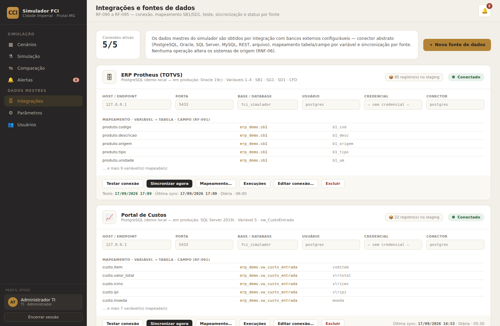
Figura 7 — Integrações (perfil TI): 5 fontes conectadas, dados de conexão editáveis com credencial mascarada, mapeamento variável → tabela · campo visível, staging por fonte, frequência de sincronização e última sync. Referências: RF-090 · RF-091 · RF-093 · RF-094.
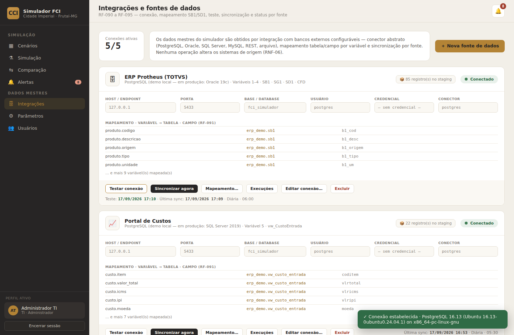
Figura 8 — Teste de conexão acionável com retorno da versão do SGBD e registro do momento da verificação no card. Referência: RF-092.
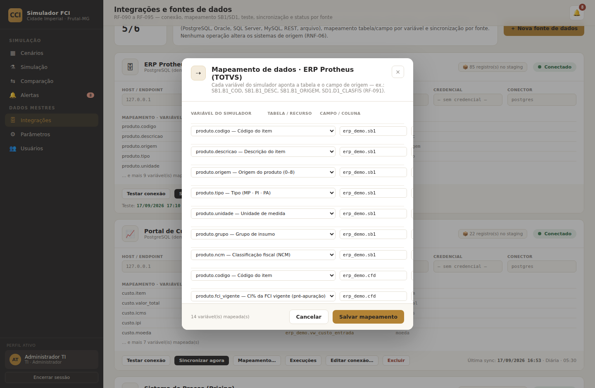
Figura 9 — Editor de mapeamento de dados: cada variável do simulador aponta tabela e campo da origem (SB1.B1_COD, B1_DESC, B1_ORIGEM, SD1.D1_CLASFIS…), com inclusão/exclusão de variáveis. Referência: RF-091.
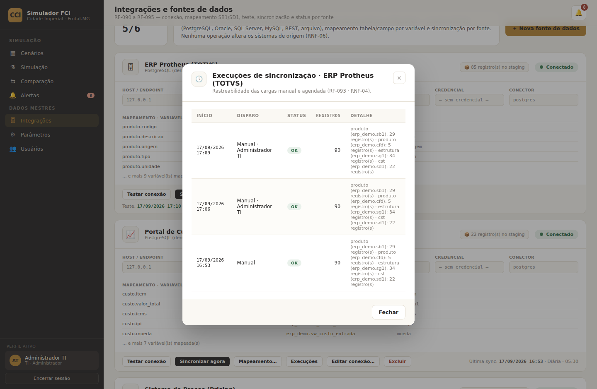
Figura 10 — Histórico de execuções de sincronização: disparo manual/agendada, usuário, status, registros e detalhe por entidade. Referências: RF-093 · RF-094 · RNF-04.
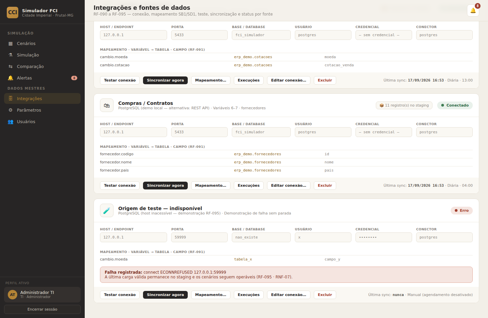
Figura 11 — Falha sem parada: fonte com host inacessível destacada em “Erro” com a causa registrada, credencial permanece mascarada, e as demais fontes seguem conectadas com a última carga válida no staging — cenários continuam operáveis. Referências: RF-094 · RF-095 · RNF-05/07.
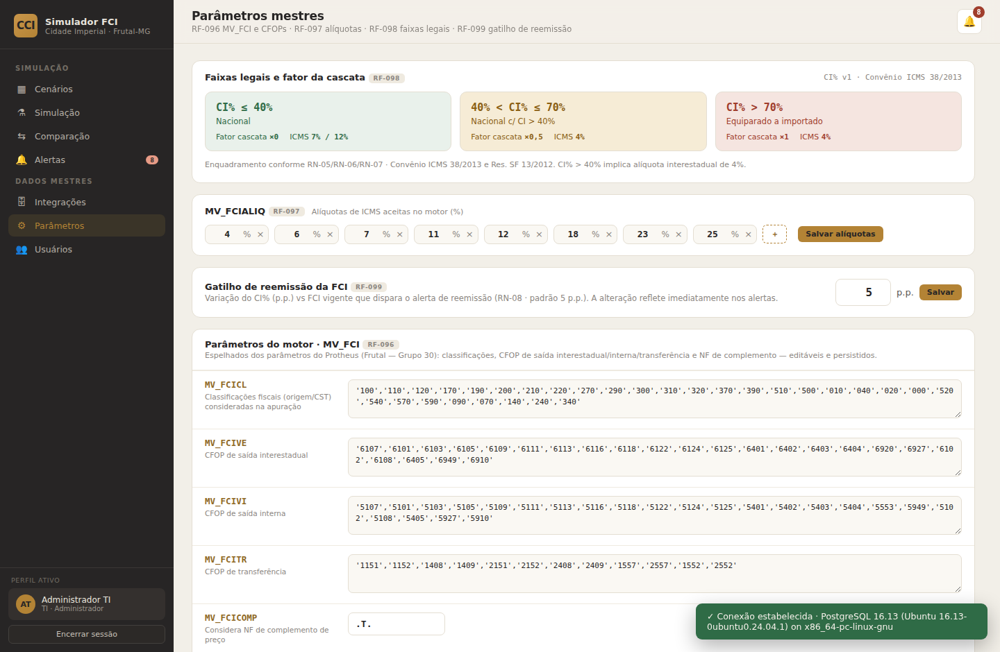
Figura 12 — Parâmetros mestres (perfil TI): três faixas legais com limite, fator ×0/×0,5/×1 e alíquota associada; relação MV_FCIALIQ editável; gatilho de reemissão em p.p.; parâmetros MV_FCI/CFOPs persistidos. Referências: RF-096 · RF-097 · RF-098 · RF-099.
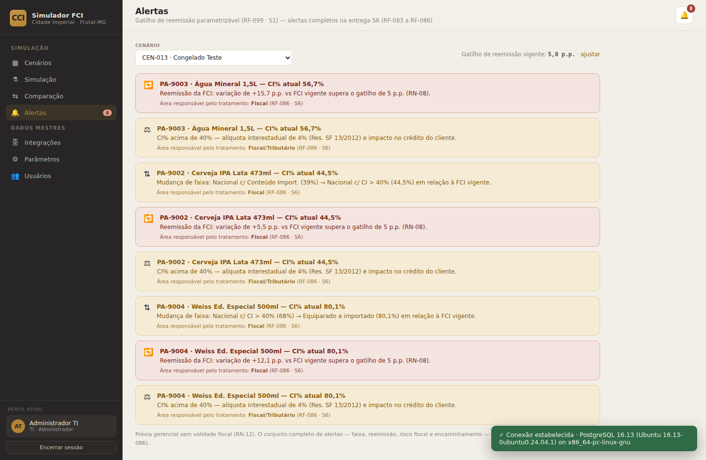
Figura 13 — Alertas com o gatilho parametrizado aplicado (variação vs FCI vigente em p.p., mudança de faixa e risco > 40%), com área responsável e ressalva de uso gerencial. Referências: RF-099 · prévia S6 (RF-083…086).
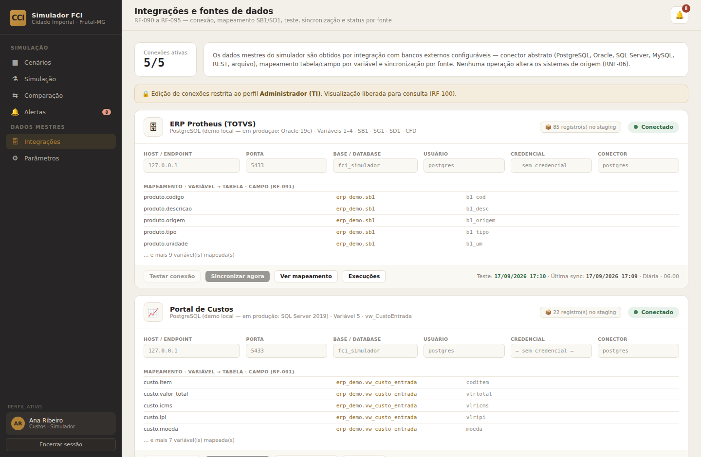
Figura 14 — Perfil não administrador (Custos · Simulador) em Integrações: aviso “🔒 Edição restrita ao perfil Administrador (TI) — visualização liberada para consulta”, ações desabilitadas e menu Usuários ausente. Referência: RF-100 · RNF-09.